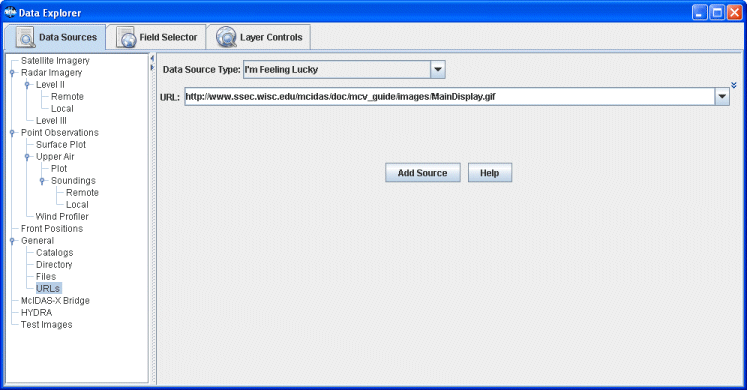

Choosing a URL
The General->URLs chooser allows for specifying the internet location (URL) of a data source. This URL may be a web page, a bundle or any data file that McIDAS-V can process from a URL. For more information on using this chooser, see Getting Started - Displaying Files from a URL.

Image 1: URL Chooser
Properties
- Data Type - Selects the type of data. If left as "I'm Feeling Lucky", McIDAS-V will figure out what kind of data is in the file by the URL itself. This can be overridden by selecting the type of data the file contains from the pull down menu. See the data formats and sources available.
- URL - Selects the URL location of the data. Enter in a URL or select one from the pull down
menu. Change the radio button to single to enter in one URL. Change it to Multiple
to enter in multiple URL entries. Only URL's using http will load data. Any URLs entered in either single or multi-line mode will be remembered between sessions.
 Help - Brings up this help page.
Help - Brings up this help page. - Loads any URLs entered as data sources in the Field Selector.
- Loads any URLs entered as data sources in the Field Selector.